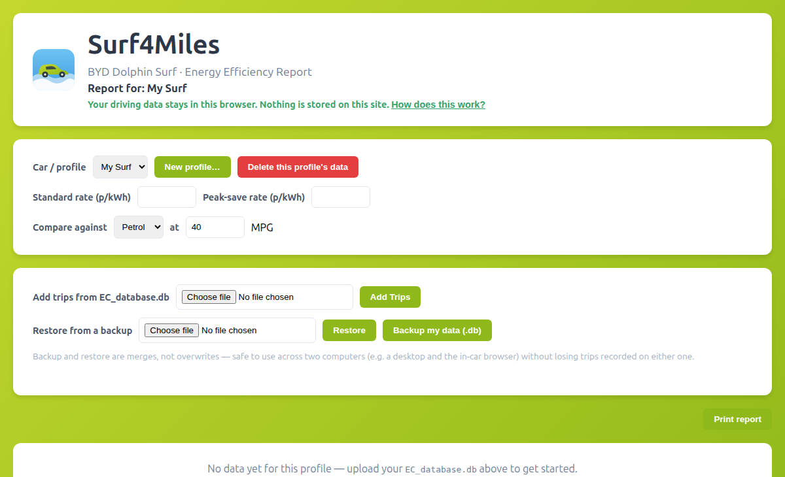
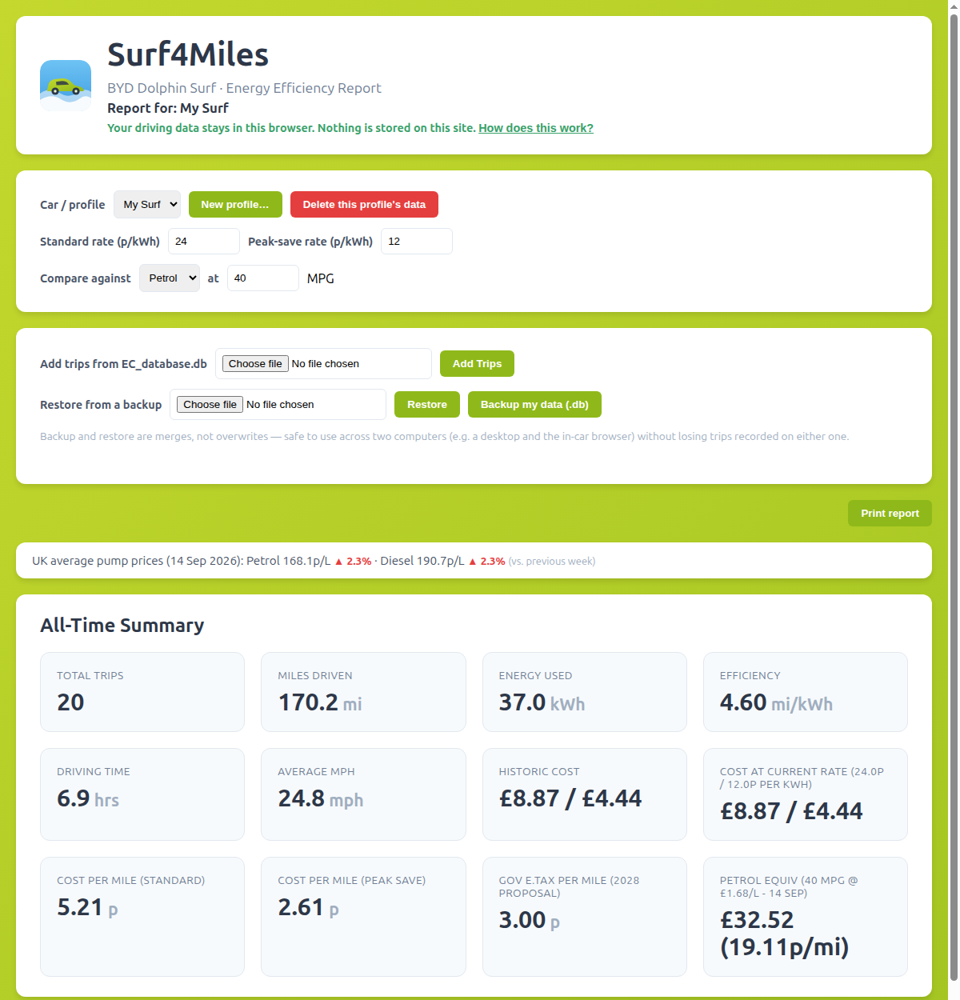

I own a BYD Dolphin Surf, and like a lot of EV owners I got curious about the numbers behind my driving fairly quickly: how many miles per kWh am I actually getting, what's that costing me at my electricity tariff, and how does it compare to what a petrol car would cost for the same trips?
The car logs all of this itself — every trip's distance, energy use, and duration is sitting in a file called EC_database.db, which you can copy off the car via its USB port. I wrote a small tool to turn that into a proper report for myself. Then I thought other Dolphin Surf owners would probably want the same thing, and started turning it into a website: Surf4Miles.
The obvious way to build this for multiple people is the usual way: sign up, upload your data, we store it, you log in to see your report. I didn't want to do that — partly because it's more to build and maintain, but mostly because I didn't want to be responsible for holding a database of strangers' driving habits.
So Surf4Miles works differently:
EC_database.db, the server reads it just long enough to calculate your report and hand back the updated numbers, then discards its temporary copy. Nothing is logged or written to permanent storage.
Once you've uploaded your trip data, you get a report with your all-time totals and a recent-trips summary: total miles, energy used, efficiency in miles/kWh, driving time and average speed, what you've spent historically vs. at your current electricity rate, cost per mile, and a comparison against what the same driving would cost in a petrol or diesel car at your chosen MPG — using the UK's official weekly average fuel prices, with a week-over-week trend indicator.

.db file at any time, and restore it elsewhere — it merges rather than overwrites, so it's safe to use across two devices (say, a desktop and the in-car browser) without either one losing trips the other recorded.It's free, and it always will be — that's a term of the license it's released under (AGPL-3.0 with the Commons Clause: modifiable and inspectable, but not resellable as a hosted product).
Surf4Miles is an independent, fan-made project and isn't affiliated with or endorsed by BYD.